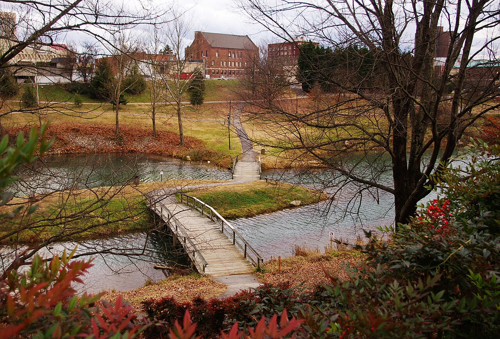
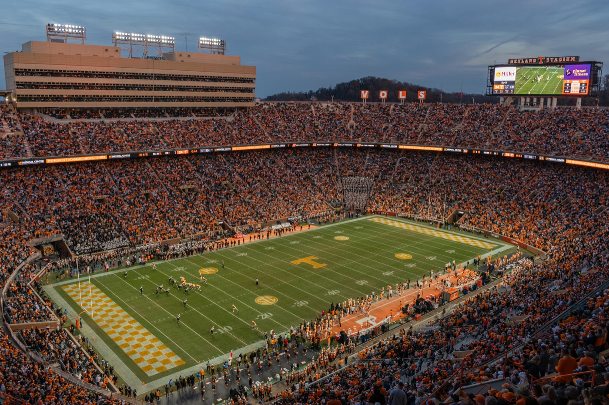
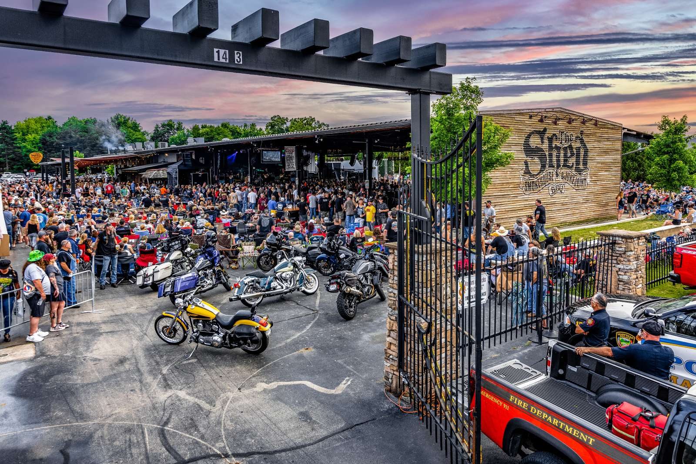
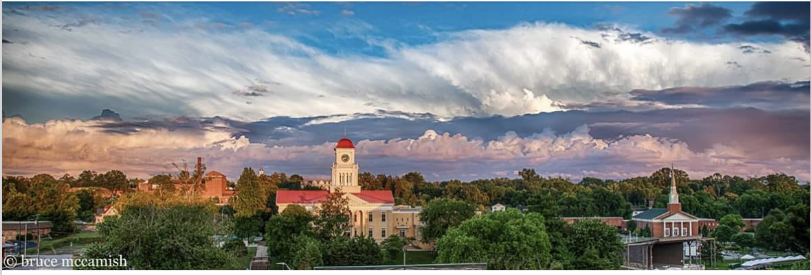

DENSO
Automotive manufacturing, engineering, training, and supplier visits
DENSO brings guests to Maryville for projects, interviews, quality work, vendors, and longer production-related stays.
DENSO lodging detailsBricks Over Broadway gives visitors a downtown Maryville home base for the two kinds of trips that bring people here most often: work tied to Blount County's industry and aviation, or a pleasure trip built around mountains, music, college weekends, and downtown Maryville.
What brings you to town?
Most Bricks guests are here for work or for a weekend worth enjoying. Choose the path that matches the trip.

Business
These are the major business reasons guests need a real place to stay, not just a room off the highway.
DENSO brings guests to Maryville for projects, interviews, quality work, vendors, and longer production-related stays.
DENSO lodging details
The Maryville campus brings corporate visitors, manufacturing teams, suppliers, and families getting to know the area.
Smith & Wesson lodging details
Arconic carries forward the Alcoa industrial story that shaped the city and still brings work travelers to the corridor.
Arconic lodging details
Guests choose Maryville for TYS flights, airport logistics, military aviation, family arrivals, and business travel.
Airport lodging details
Cirrus brings pilots, owners, instructors, service teams, spouses, and families to McGhee Tyson Airport.
Cirrus lodging detailsPleasure
Stay downtown, then branch out to the Smokies, The Dragon, music, college weekends, Knoxville events, and family time.

Use Maryville for Townsend, Cades Cove, park days, and mountain drives without sleeping in the busiest corridors.
Maryville Smoky Mountain lodging
Vols weekends, concerts, and Knoxville events bring guests who want Neyland access with a quieter Maryville stay.
Best place to stay for a UT game
Bronco owners and guests come to Maryville for the Tennessee Off-Roadeo experience and a simple downtown landing spot.
Open Bronco Off-RoadeoParents, alumni, faculty, and families use downtown Maryville for move-in, graduation, games, reunions, and campus events.
Visit Maryville College
The Shed brings live music, barbecue, bike nights, and event weekends to Maryville.
See The Shed schedule
Drivers, riders, photographers, and car clubs stay in Maryville for Dragon, Deals Gap, and Foothills Parkway weekends.
Places to stay near the Dragon
Weddings, reunions, holidays, medical visits, and family weekends often need more room and a location that makes meeting up easy.
Wedding guest lodging
Guests come for dinner on Broadway, downtown markets, art walks, Summer on Broadway, Hops in the Hills, and easy evenings.
Open the downtown guideBook direct in Maryville
Airbnb and Vrbo can be useful for finding a place, but the final total often includes marketplace service fees that do not make the stay better. Booking direct keeps the reservation simple and helps guests compare the real cost of staying in downtown Maryville.